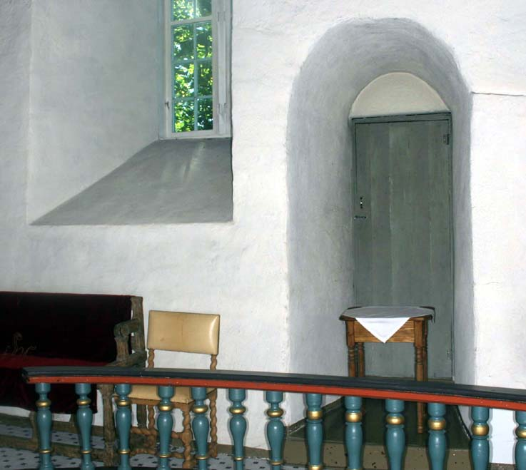
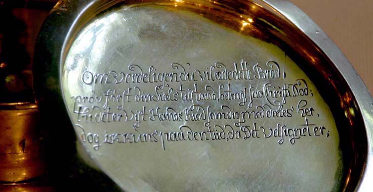
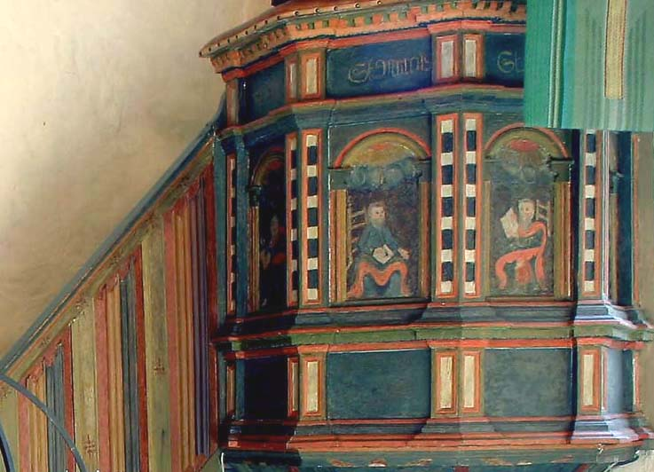
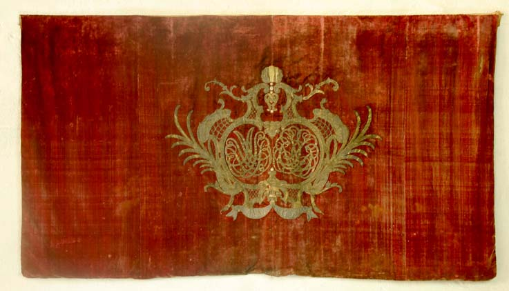
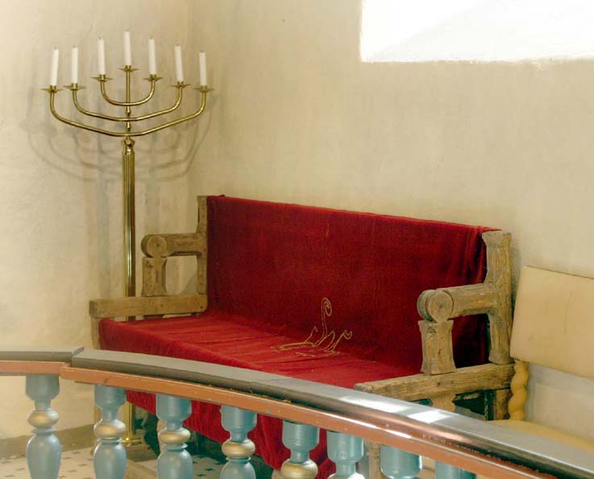
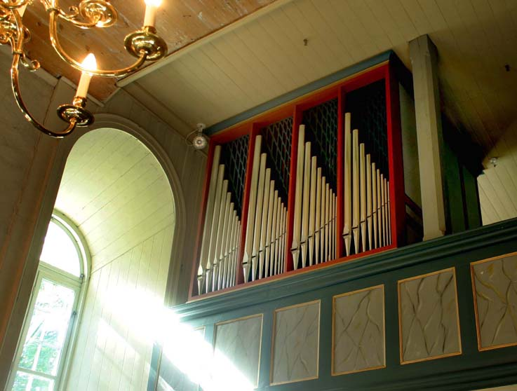
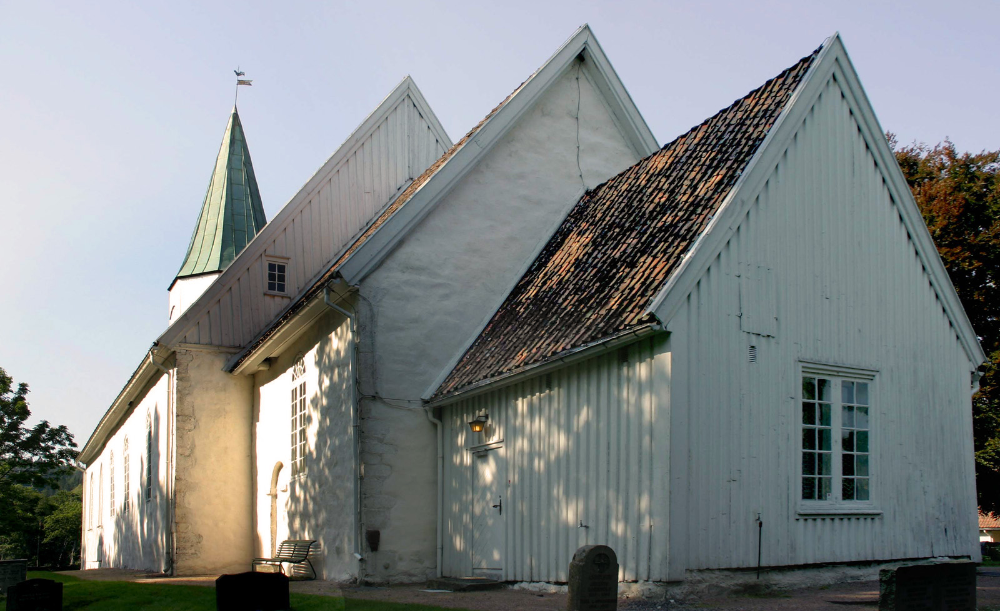

Tveit kirke
Foto: Torvald Slettebø, Universitetet i Agder, Seniorsenteret
Tekst: Ingrid W. Jæger

Tveit kirke. Romansk stil. Hovedskip og kor er vel 800 år. Kan ikke dateres sikrere enn det.Nåværende tårn bygget i 1831. Våpenhus fra 1867. Da ble det opprinnelige våpenhus lagt til kirkeskipet. Sakrestiet slik det er i dag er fra 1827.
Kirken sett fra vest.
Kirken sett fra øst. Sakresti i forgrunnen.

Detalj fra syd. Vegg med dør inn til koret.
Inngangsparti med våpenhus fra 1867, bygget i sveitserstil. Døren lengst til venstre er en blind-dør, bygget for symmetriens skyld. Døren til høyre fører til trapp opp til galleriet.

To stenskulpturer på kirkens sørvegg. Det største forestiller et dyrehode som sluker et menneske. Det minste er en ansiktsmaske med flastklemt nese og innsunkne ører. Disse to små skulpturene representerer noen av de vanligste motiver i norsk,romansk skulptur, menneskeansikt, og dyr og mennesker i kamp på liv og død.
Spor etter gjennmurt dør i kirkens sørvegg. Denne døren var for menigheten, mens døren som fører inn til koret var prestens spesielle dør.
Inngangsdøren til koret, prestenss dør. Nå brukes den til utgangsdør for menigheten ved spesielle gudstjenester, f.eks jul, når kirken er helt full.
Dør i koret sett innenfra.
Inngangspartiet - bygget i 1867. Bygget i sveitserstil. Døren lengst til venstre er en blind-dør, bygget for symmetriens skyld. Døren til høyre fører til trapp opp til galleriet /p>
Gravstøtte i Våpenhuset. Den er i kleberstein og har hollandsk innskrift. I oversettelse betyr teksten: ”Her ligger begravet Femeyan Jans Dr som venter på den lykkelige oppstandelse. Denne har vært den høyst ærede frue av Capetyn Dierick Hessels tjener av sin kongelige majestet av Danmark. Stedt til hvile den 27.august A-o 1635”
Kaptein Hessels skal ha vært kongelig tilsynsmann i Norge, det er mulig det er hans kone som ble begravet her. Steinen har symboler som viser døden og oppstandelsen og bærer DierickHessels skjold.
Detalj fra våpenhuset.
Kirkens interiør mot alteret.
Tavle for salmenummer. Legg merke til tykkelsen på murveggen. Den er ca 1 ½ . tykk, og er er såkalt kistemur, bygd av innvendig og utvendig stein med mindre stein og kalk imellom og som binder de to murene sammen.
Altertavlen er barokk, og fra 1600 tallet. Muligens laget av Hendtzschel, en kjent kunstmaler fra denne tiden. Nederst bilde av nattverden. Til høyre for maleriet en treskulptur av Kristus som holder jordkloden i ene hånden. Den andre er hevet til velsignelse. Til venstre: Moses med stentavlen bak.
Altertavlen.
Messehagl fra 1777.
Teksten på altertavlen: til venstre: Lex permosen data : For loven ble gitt ved Moses.
I midten: Memoriam Instuit mirabilum suorum benignus ille ac Miserliors dominus psal cxi, som betyr : Han har sørget for at at hans underverk minnes Herren er nådig og barmhjertig.
Til høyre: Gratia et ueritas per christum, som betyr. Nåden og sannheten ved Kristus.
Toppen av altertavlen
Detalj av altertavlen som viser oppstandelsen.
Øverste del av altertavlen. Matteusstår på den ene siden av bildet, Johannes på den andre, med sine symboler, engelen og løven.
Over dem står evangelistene Lukas og Johannes uten smboler. Øverst står Kristus. Den figuren ble laget under den store restaureringen i 1947-55, fordi den gamle sammen med hele toppstykket på altertavlen var borte.
Evangelisten Lukas
Nærbilde av maleriet "Nattverden"
Nærbilde av Moses tv. Han står med stentavlene med de ti bud.
Jesus til høyre i maleriet.
Under teksten på altertavlen sees Antependiet på alteret. Det er en kopi av et fra 1600 tallet. Originalen eksisterer. Over antependiet ligger brodert duk fra 1930, laget av en syforening ledet av prestens kone, fru Dalan.
Lysestakene står første gang omtalt i fortegnelsen over kirkens inventar fra 1663

Altersølv
Sølvkanne gitt til Tveit kirke av ordfører Guttorm Føreid og hustru i 1920
Sølvkalk fra 1870
Detalj av foten til sølvkalken.
Brøddisk fra 1781
Brøddisken i nærbilde
Brøddiskens innside
Døpefonten. Stativet er av nyere dato, messingfatet stammer sansynligvis fra den gamle døpefonten i sandstein som finnes på Naturhistorisk museum, UiO, og som Tveit Menighet snart får tilbakeført. (håper vi)
Døpefonten og messingfatet
Kanne til dåpsvann
Prekestolen - fra etter reformasjonen. Før den tid brukte man ikke prekestoler. Kedet, med liturgiske farger, er fra 1995.
Prekestol og lyskrans. Lyskransen er av nyere dato.
Detalj av prekestol viser de 4 evangelister, Matteus, Markus, Lukas, Johannes.
Prekestol med trappen.
Tveit prestegjelds sogneprester. Bildene henger i sakrestiet.
Døråpningen fra sakresitet og inn mot alteret og koret.
Restene av gammelt timeglass, står i vinduet ved prekestolen og skulle vise hvor lenge presten kunne preke. Når sanden hadde rent ned, skulle prekenen være slutt. Det var den vel neppe alltid.
Halsklave fra gapestokk som trolig har stått utenfor kirken.
Lysekroner i kirkeskipet. De er fra 1955.
Lampetter fra 1955
Tavle med salmenummer
7 armet lysestake. Bak står en kopi av Thorvaldsens kirstusfigur, gitt av sogneprest Bødtker i 1904.
To høye, 7 armede lysestaker står foran i koret på hver sin side av alteret. Stolene foran den ene er gitt av Hegermann på Boen. De sto opprinnelig i Hegermannstolen foran på galleriet.
Detalj fra antependiet på alteret.
Brudestol fra 1577. Den har svingrygg, dvs ryggstøet kan føres over setet, slik at den ”stenger” stolen. Den er gitt til kirken av Niels Biørnsen, Jacob Møller og Bent Vind.
Brudestolen
For kollekt-innsamling, "Tavlepenge".
Salmenummer?
Detalj fra trappen opp til galleriet.
Utsikt fra galleriets ”Hegermannsstol” mor orgelet. Orgelet ble innviet i desember 1983 på en stor festgudstjeneste. Det ble levert av Bruno Christensen og Sønner, Danmark, og har 12 stemmer.

Kirkeskipet, mot orgelet.
To gamle lysestaker
Fra galleriet mot alteret.
Interiøret sett fra koret mot orgelet.
Trappen ned fra klokketårnet
Kirkeinteriør
Utsikt fra orgelet på galleriet.
Orgelpipene
Alteret sett fra galleriet.
Detalj fra klokketårnets konstruksjon. Det er bygget for å kunne tåle ”Guds strenge vær tillige med klockenes Gang.”
Kirkeklokkene i Tveit kirke.
Begge kirkeklokkene er gamle. Den ene ble omstøpt i 1876 og bærer dette årstall. Den er stemt i F. Den andre ble omstøpt i 1928 og bærer denne inskripsjonen. "Støpt av Hans Stallemo, Kristiansand 1790, omstøpt av O.Olsen Nauen !928. Soli Deo Gloria." Egentlig ble den bare omstøpt i 1790, og er mye eldre. Den er stemt i Des.

Gammel gravstein. Omtalt til bilde nr 15
Gamle gravsteiner ved inngangen til kirken. På en av dem kan en se. S.P 1632-

Minnestøtten over Eidsvollsmannen Osmund Andersen Lømsland. Den ble reist av bygdefolk i 1914. I bakgrunnen Tveit prestegård.
Kirkens inngangsparti. I bakgrunnen ser vi prestegården. Den er fra 1818
Inngangspartiet med våpenhus fra 1867. Kirken sett fra sør.
Kirketårnet fra 1831. Under værhanen er en metallvimpel hvor det står HH. Tårnet fikk nytt kobbertak i 1955.
Kirken sett fra nord.
Kirken sett fra sør.
Kirken sett fra nordøst. Legg merke til det lille utbygget inntil kirkeskipet. Der er inngangen til galleriet før i tiden. Den ble brukt av godseierne fra Boen fram til ca 1920, når de skulle opp til sin kirkestol på galleriet.

Inngangspartiet.
Kirkens interiør. Legg merke til et lysere, firkantet felt i taket. Her gikk ovnsrøret fra den gamle vedovnen opp. Kirken fikk eletrisk oppvarming i 1955, og ovnene ble revet.